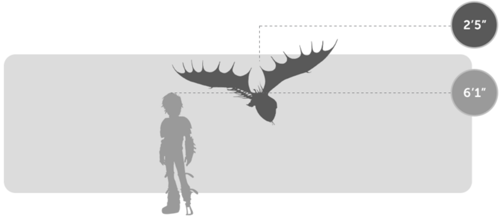
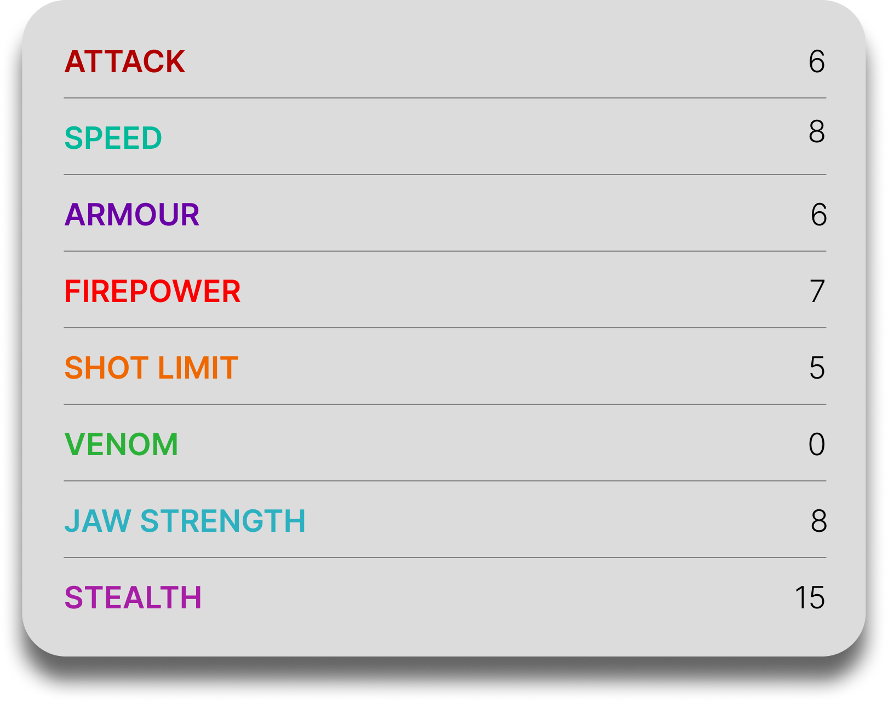
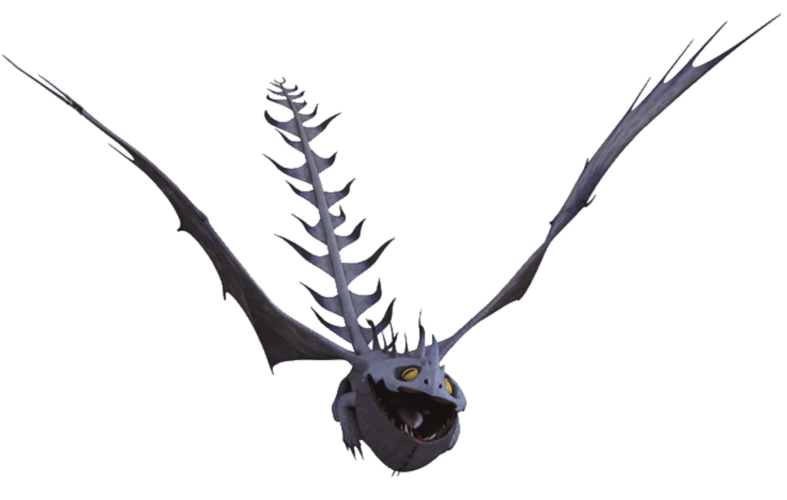

Smothering Smokebreath
General Overview
The Smothering Smokebreath is a small dragon belonging to the Mystery Class. It is an elusive and highly stealthy species that prefers to remain hidden behind thick clouds of black smoke. Rather than relying on direct aggression, Smothering Smokebreaths use concealment, teamwork, and extremely hot fire to protect their territory, scavenge valuable metal, and confuse anyone unlucky enough to cross their path.


Physical Appearance
- Body & Color: It has a flat, compact body that is usually entirely gray, with dark and light gray tones blending into its smoky appearance.
- Head & Face: Its head is large compared to its body, with a skull-like shape, yellow eyes, and a nasal horn flanked by two smaller ones.
- Appendages: It has short, stubby legs and a body built more for stealth and quick movement than brute force.
- Wings & Tail: Its wingspan is more than twice its body length, while its tail is long, thin, and covered in sharp spines, creating a smoke-like silhouette in flight.
Abilities and Combat
- Smoke Veil: It can excrete dense black smoke from its skin, creating a thick cloak of fog to hide itself and its pack from enemies or prey.
- Extremely Hot Fire: Although it usually breathes smoke, it can also unleash a welding torch-like fire hot enough to melt metal in moments.
- Pack Concealment: When several Smokebreaths gather together, their smoke combines into what appears to be a massive fog bank, making them even harder to detect.
- Metal Nest Building: It scavenges metal from ships and villages, then welds the pieces together with its fire to create nests.
- Stealth and Ambush: Its natural smoke cover allows it to approach targets unseen and vanish quickly when threatened.
- Distraction by Metal: It is highly attracted to shiny metallic objects, which can also be used to distract it in combat.
Behavior and Personality
- Intelligence: It is clever and resourceful, especially when working with others to gather materials and stay hidden.
- Temperament: Smothering Smokebreaths are not naturally aggressive, but they are strongly territorial and will defend their homes when threatened.
- Behavior: They prefer staying concealed, traveling in groups, and using smoke rather than direct confrontation to control their surroundings.
- Social Traits: They are highly social dragons that live in large packs and cooperate closely as a team.
- Diet: Their known diet includes crab, fish, and mutton.
